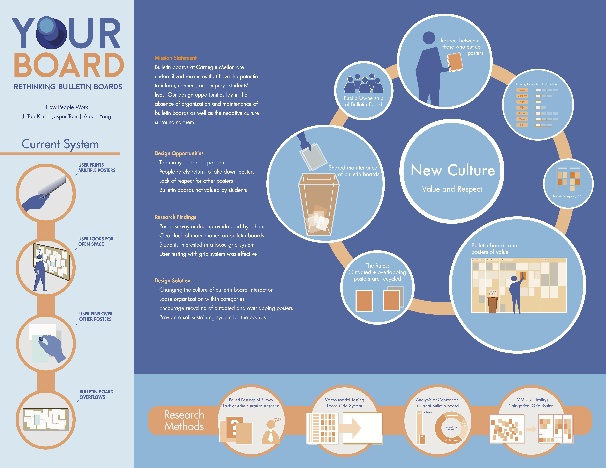
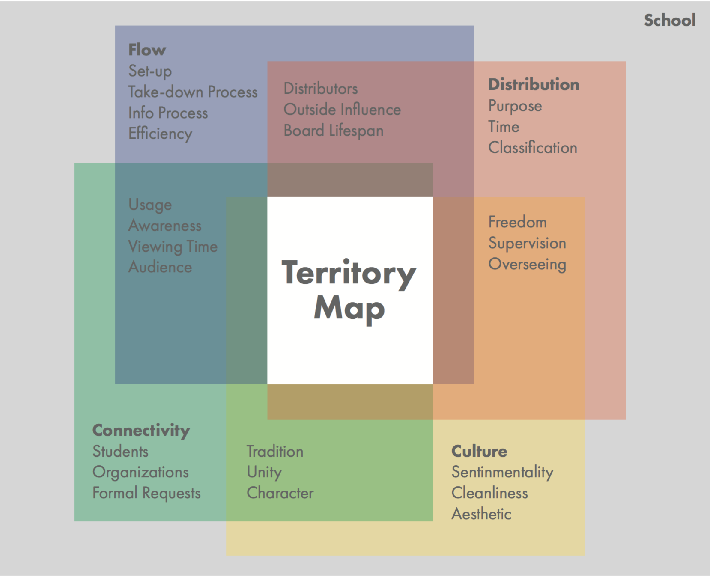
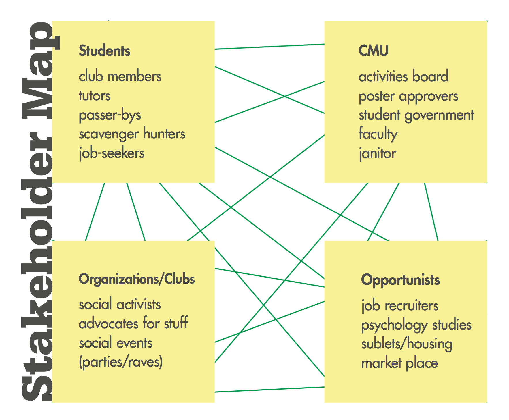
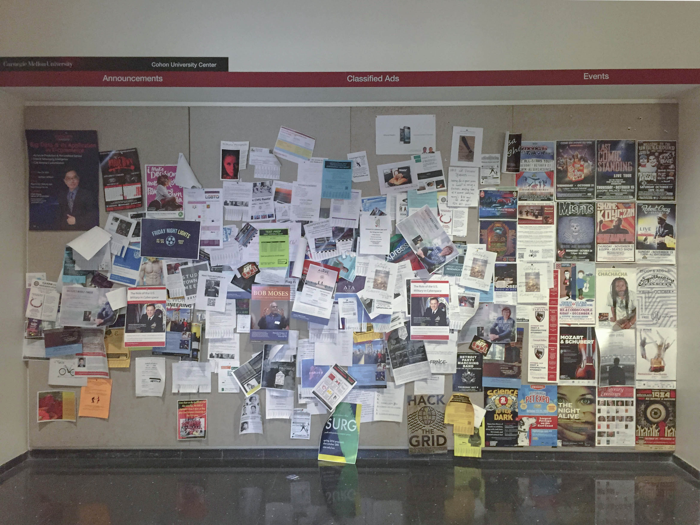
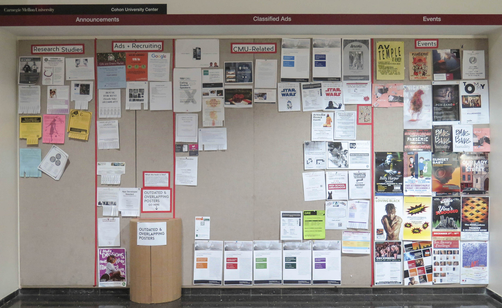
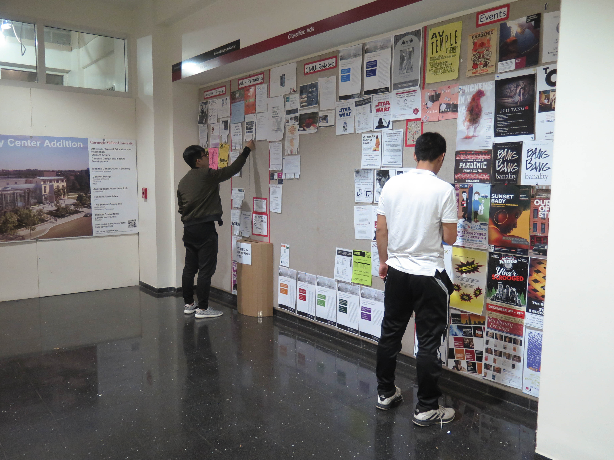
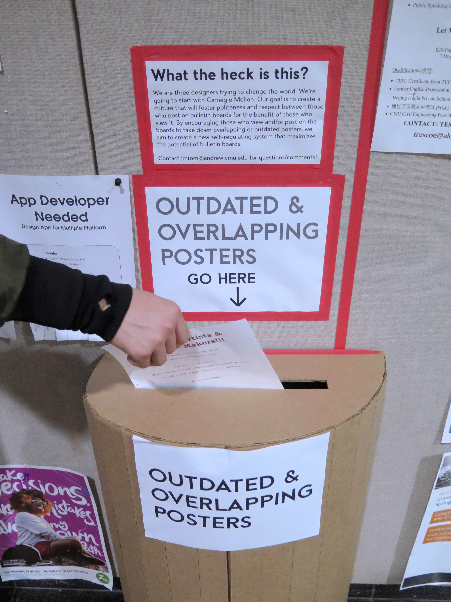
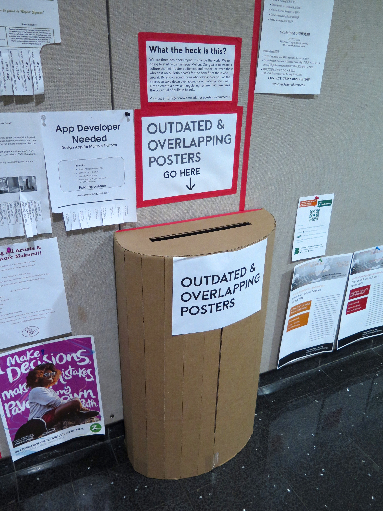

Overview
Ji Tae Kim, Jasper Tom, and I saw design opportunities in the chaotic and unorganized nature of CMU's bulletin boards, where people could potentially be discovering information about campus events. We researched how people currently interact with the boards and tested our own redesigns of the system, with our goal being to change the culture of school bulletin boards.

Questions and Precedents - PDF
We started off our design research by asking questions that we would like answers to about the unorganized bulletin boards. We also looked at other projects that attempted to solve our problem, many of which used new technology and digital bulletin boards. While these solutions would make it easier to maintain, our group looked into ways to change the culture of the bulletin board system rather than just turning it all into digital screens.
Territory and Stakeholder Maps
We created territory and stakeholder maps in order to help guide our research. The former helped us narrow the scale to which our research would take place, as well as organize the system in which the bulletin boards on campus operated. The latter helped us identify who's affected by and has a part in the design problem, and in turn led us to specify what type of people interact with the bulletin boards the most.


Research Protocol
After creating the territory and stakeholder maps, we moved onto figuring out how to tackle our design problem by planning a research protocol. Our main methods of research involved posting a survey on the bulletin boards themselves, as well as having participants create their own ideal bulletin board on a velcro model.
Research Findings and User Testing - PDF
For our survey, we got a whopping zero responses, which we partially attributed to not enough people paying attention to the content on bulletin boards (though the questions were also very open, which may have discouraged participation). As for our velcro model method, we asked around 11 or 12 participants and found that many of them liked a loose grid system, or a board system that had a fluid layout that could change depending on the amount of content.
A third method of research we employed was user testing a new system on a bulletin board over time. We created an organization system with four sections: School-Sponsored, Recruitment, Advertisements, and Clubs/Organizations to see how users would interact with. The photos we took were over the course of about a week (pictured below). It became clear that people usually follow the guidelines when there are guidelines to actually follow, so our next step was to try and implement a similar system with stricter rules on a larger-scale bulletin board.

Implementing our Redesign
We went to the University Center bulletin board (pictured top-right), which many students considered to be the school's "main" board. We took down a lot of the outdated posters and created a categorical system, as well as a trash-can in front of the bulletin board to encourage students to throw away outdated or overlapping posters.
Following the implementation of our redesign, the dean of the School of Computer Science contacted us to put in a similar system on their bulletin boards. Additionally, our redesign has remained in the University Center since December 2015.




